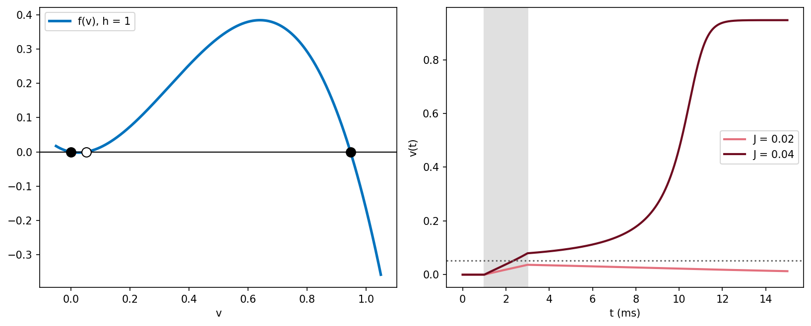
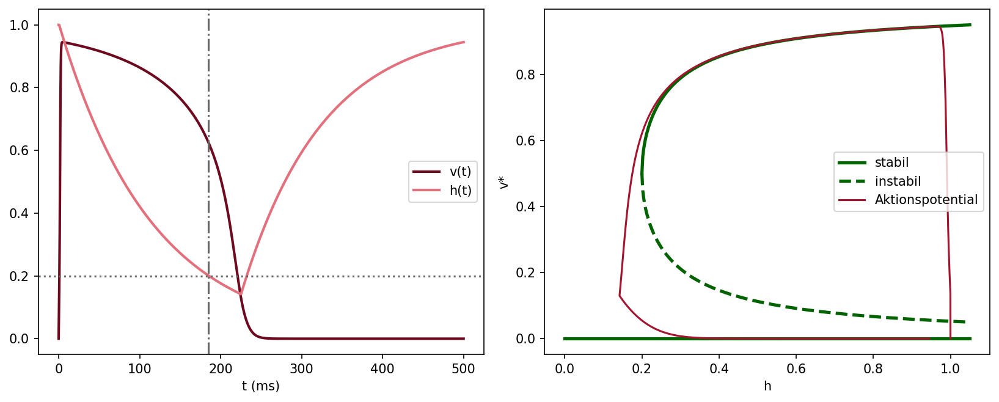
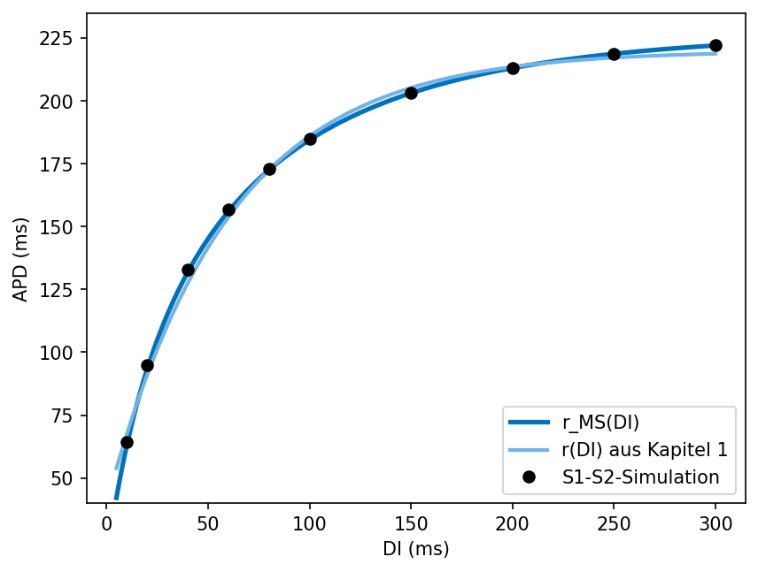

Kapitel 3 · Kontinuierliche dynamische Systeme mit einer Variablen
3.5Vertiefung: Erregbarkeit von Herzzellen
Das Mitchell-Schaeffer-Modell beschreibt das Aktionspotential einer Herzmuskelzelle mit einer Differentialgleichung für das Membranpotential v. Hält man die Kanalvariable h fest, hat sie einen Ruhezustand, eine Schwelle und einen erregten Zustand. Lässt man h langsam mitlaufen, entsteht ein vollständiges Aktionspotential, und man kann seine Dauer und die Restitutionskurve berechnen. Die Programme verwenden das Euler-Verfahren mit h = 0.01 ms.
Zu jeder Abbildung des Abschnitts finden Sie das Programm, das sie erzeugt. Ändern Sie Parameter und Startwerte und beobachten Sie, was passiert. Abbildungs- und Gleichungsnummern beziehen sich auf das Buch.
Abb. 3.23
Ruhe, Schwelle und Erregung
dv/dt = h v2 (1 − v)/τin − v/τout + J(t), h = 1
Ein Reiz, der v über die Schwelle vs* ≈ 0.053 hebt, löst die Erregung aus; ein schwächerer Reiz klingt ab.

# Abb. 3.23: schnelle Dynamik des Mitchell-Schaeffer-Modells (Buch, Abschnitt 3.5, Gl. 3.29 und 3.31)
# dv/dt = h v^2 (1 - v)/tin - v/tout + J(t) mit festem h = 1; links f(v) mit Ruhe, Schwelle und erregtem Zustand,
# rechts Antwort auf einen Reiz der Dauer 2 ms unter (J = 0.02) und über (J = 0.04) der Schwelle
# (c) 2026 Philipp Kügler · Programm zum Buch „Dynamische Systeme in den Lebenswissenschaften“ · MIT-Lizenz (siehe LICENSE)
using Printf, Plots
tin = 0.3; tout = 6.0; topen = 100.0; tclose = 115.0; vgate = 0.13 # Parameter in ms
hc = 4 * tin / tout
function simuliere(T, reize; J = 0.2, dauer = 2.0, dt = 0.01, h_fest = false)
# Euler-Verfahren für das Mitchell-Schaeffer-Modell; Reizstrom J für 'dauer' ms ab jedem Zeitpunkt in 'reize'
N = round(Int, T / dt); t = dt .* (0:N)
Jt = zeros(N + 1)
for s in reize
Jt[(t .>= s - 1e-9) .& (t .< s + dauer - 1e-9)] .= J
end
v = zeros(N + 1); h = ones(N + 1)
for n in 1:N
dv = h[n] * v[n]^2 * (1 - v[n]) / tin - v[n] / tout + Jt[n]
dh = h_fest ? 0.0 : (v[n] < vgate ? (1 - h[n]) / topen : -h[n] / tclose)
v[n + 1] = v[n] + dt * dv; h[n + 1] = h[n] + dt * dh
end
return t, v, h
end
durchgaenge(t, v; schwelle = 0.1) = t[findall(diff(sign.(v .- schwelle)) .!= 0)] # Beginn und Ende der Aktionspotentiale
f(v) = v^2 * (1 - v) / tin - v / tout
w = sqrt(1 - hc); vs = (1 - w) / 2; ve = (1 + w) / 2 # Schwelle und erregter Zustand
@printf("h_c = %.2f, Schwelle v_s* = %.4f, erregt v_e* = %.4f\n", hc, vs, ve)
v = range(-0.05, 1.05, length = 500)
p1 = plot(v, f.(v), color = RGB(0, 0.447, 0.741), lw = 2.5, label = "f(v), h = 1", legend = :topleft, xlabel = "v")
hline!(p1, [0], color = :black, label = ""); scatter!(p1, [0, ve], [0, 0], color = :black, label = "")
scatter!(p1, [vs], [0], color = :white, msc = :black, label = "")
p2 = plot(xlabel = "t (ms)", ylabel = "v(t)", legend = :right)
vspan!(p2, [1, 3], color = :gray90, label = "")
for (J, farbe) in [(0.02, RGB(0.89, 0.44, 0.49)), (0.04, RGB(0.43, 0.04, 0.12))]
t, v, _ = simuliere(15, [1.0], J = J, h_fest = true)
plot!(p2, t, v, color = farbe, lw = 2, label = "J = $J")
@printf("J = %g: v(15) = %.3f\n", J, v[end])
end
hline!(p2, [vs], ls = :dot, color = :gray, label = "")
display(plot(p1, p2, layout = (1, 2), size = (900, 420)))% Abb. 3.23: schnelle Dynamik des Mitchell-Schaeffer-Modells (Buch, Abschnitt 3.5, Gl. 3.29 und 3.31)
% dv/dt = h v^2 (1 - v)/tin - v/tout + J(t) mit festem h = 1; links f(v) mit Ruhe, Schwelle und erregtem Zustand,
% rechts Antwort auf einen Reiz der Dauer 2 ms unter (J = 0.02) und über (J = 0.04) der Schwelle
% (c) 2026 Philipp Kügler · Programm zum Buch „Dynamische Systeme in den Lebenswissenschaften“ · MIT-Lizenz (siehe LICENSE)
tin = 0.3; tout = 6; topen = 100; tclose = 115; vgate = 0.13; % Parameter in ms
hc = 4 * tin / tout;
J = 0.2; dauer = 2; dt = 0.01;
f = @(v) v.^2 .* (1 - v) / tin - v / tout;
w = sqrt(1 - hc); vs = (1 - w) / 2; ve = (1 + w) / 2; % Schwelle und erregter Zustand
fprintf('h_c = %.2f, Schwelle v_s* = %.4f, erregt v_e* = %.4f\n', hc, vs, ve);
subplot(1, 2, 1);
vv = linspace(-0.05, 1.05, 500);
plot(vv, f(vv), 'Color', [0 0.447 0.741], 'LineWidth', 2.5); hold on
plot([-0.05 1.05], [0 0], 'k');
plot([0 ve], [0 0], 'ko', 'MarkerFaceColor', 'k'); plot(vs, 0, 'ko', 'MarkerFaceColor', 'w'); hold off
xlabel('v'); legend('f(v), h = 1', 'Location', 'northwest');
subplot(1, 2, 2);
fill([1 3 3 1], [0 0 1 1], [0.88 0.88 0.88], 'EdgeColor', 'none'); hold on
Js = [0.02 0.04]; farben = [0.89 0.44 0.49; 0.43 0.04 0.12];
for i = 1:2
J = Js(i); T = 15; reize = 1; h_fest = true;
N = round(T / dt); t = dt * (0:N);
Jt = zeros(1, N + 1);
for s = reize
Jt(t >= s - 1e-9 & t < s + dauer - 1e-9) = J; % Reizstrom J für 'dauer' ms ab jedem Reiz
end
v = zeros(1, N + 1); h = ones(1, N + 1);
for n = 1:N % Euler-Verfahren
dv = h(n) * v(n)^2 * (1 - v(n)) / tin - v(n) / tout + Jt(n);
if h_fest, dh = 0;
elseif v(n) < vgate, dh = (1 - h(n)) / topen;
else, dh = -h(n) / tclose;
end
v(n + 1) = v(n) + dt * dv; h(n + 1) = h(n) + dt * dh;
end
d = t(find(diff(sign(v - 0.1)) ~= 0)); % Beginn und Ende der Aktionspotentiale (v = 0.1)
plot(t, v, 'Color', farben(i, :), 'LineWidth', 2);
fprintf('J = %g: v(15) = %.3f\n', J, v(end));
end
plot([0 15], [vs vs], ':', 'Color', [0.4 0.4 0.4]); hold off
xlabel('t (ms)'); ylabel('v(t)');# Abb. 3.23: schnelle Dynamik des Mitchell-Schaeffer-Modells (Buch, Abschnitt 3.5, Gl. 3.29 und 3.31)
# dv/dt = h v^2 (1 - v)/tin - v/tout + J(t) mit festem h = 1; links f(v) mit Ruhe, Schwelle und erregtem Zustand,
# rechts Antwort auf einen Reiz der Dauer 2 ms unter (J = 0.02) und über (J = 0.04) der Schwelle
# (c) 2026 Philipp Kügler · Programm zum Buch „Dynamische Systeme in den Lebenswissenschaften“ · MIT-Lizenz (siehe LICENSE)
import numpy as np
import matplotlib.pyplot as plt
tin, tout, topen, tclose, vgate = 0.3, 6.0, 100.0, 115.0, 0.13 # Parameter in ms
hc = 4 * tin / tout
def simuliere(T, reize, J=0.2, dauer=2.0, dt=0.01, h_fest=None):
"""Euler-Verfahren für das Mitchell-Schaeffer-Modell; Reizstrom J für 'dauer' ms ab jedem Zeitpunkt in 'reize'."""
N = int(round(T / dt)); t = dt * np.arange(N + 1)
Jt = np.zeros(N + 1)
for s in reize:
Jt[(t >= s - 1e-9) & (t < s + dauer - 1e-9)] = J
v = np.zeros(N + 1); h = np.ones(N + 1)
for n in range(N):
dv = h[n] * v[n]**2 * (1 - v[n]) / tin - v[n] / tout + Jt[n]
if h_fest is not None: dh = 0.0
elif v[n] < vgate: dh = (1 - h[n]) / topen
else: dh = -h[n] / tclose
v[n + 1] = v[n] + dt * dv; h[n + 1] = h[n] + dt * dh
return t, v, h
def durchgaenge(t, v, schwelle=0.1):
"""Zeitpunkte, zu denen v die Schwelle über- oder unterschreitet (Beginn und Ende eines Aktionspotentials)."""
i = np.where(np.diff(np.sign(v - schwelle)) != 0)[0]
return t[i]
f = lambda v: v**2 * (1 - v) / tin - v / tout
w = np.sqrt(1 - hc); vs, ve = (1 - w) / 2, (1 + w) / 2 # Schwelle und erregter Zustand
print(f"h_c = {hc:.2f}, Schwelle v_s* = {vs:.4f}, erregt v_e* = {ve:.4f}")
fig, axs = plt.subplots(1, 2, figsize=(11, 4.5))
v = np.linspace(-0.05, 1.05, 500)
axs[0].plot(v, f(v), color=(0, 0.447, 0.741), lw=2.5, label="f(v), h = 1"); axs[0].axhline(0, color="k", lw=1)
axs[0].plot([0, ve], [0, 0], "ko", ms=9); axs[0].plot(vs, 0, "o", mfc="w", mec="k", ms=9)
axs[0].set_xlabel("v"); axs[0].legend(loc="upper left")
for J, farbe in [(0.02, (0.89, 0.44, 0.49)), (0.04, (0.43, 0.04, 0.12))]:
t, v, _ = simuliere(15, [1.0], J=J, h_fest=1.0)
axs[1].plot(t, v, color=farbe, lw=2, label=f"J = {J}")
print(f"J = {J}: v(15) = {v[-1]:.3f}")
axs[1].axhline(vs, color="0.4", ls=":"); axs[1].axvspan(1, 3, color="0.88")
axs[1].set_xlabel("t (ms)"); axs[1].set_ylabel("v(t)"); axs[1].legend(loc="center right")
plt.tight_layout()
plt.show()# Abb. 3.23: schnelle Dynamik des Mitchell-Schaeffer-Modells (Buch, Abschnitt 3.5, Gl. 3.29 und 3.31)
# dv/dt = h v^2 (1 - v)/tin - v/tout + J(t) mit festem h = 1; links f(v) mit Ruhe, Schwelle und erregtem Zustand,
# rechts Antwort auf einen Reiz der Dauer 2 ms unter (J = 0.02) und über (J = 0.04) der Schwelle
# (c) 2026 Philipp Kügler · Programm zum Buch „Dynamische Systeme in den Lebenswissenschaften“ · MIT-Lizenz (siehe LICENSE)
tin <- 0.3; tout <- 6; topen <- 100; tclose <- 115; vgate <- 0.13 # Parameter in ms
hc <- 4 * tin / tout
simuliere <- function(T, reize, J = 0.2, dauer = 2, dt = 0.01, h_fest = FALSE) {
# Euler-Verfahren für das Mitchell-Schaeffer-Modell; Reizstrom J für 'dauer' ms ab jedem Zeitpunkt in 'reize'
N <- round(T / dt); t <- dt * (0:N)
Jt <- numeric(N + 1)
for (s in reize) Jt[t >= s - 1e-9 & t < s + dauer - 1e-9] <- J
v <- numeric(N + 1); h <- rep(1, N + 1)
for (n in 1:N) {
dv <- h[n] * v[n]^2 * (1 - v[n]) / tin - v[n] / tout + Jt[n]
dh <- if (h_fest) 0 else if (v[n] < vgate) (1 - h[n]) / topen else -h[n] / tclose
v[n + 1] <- v[n] + dt * dv; h[n + 1] <- h[n] + dt * dh
}
list(t = t, v = v, h = h)
}
durchgaenge <- function(t, v, schwelle = 0.1) t[which(diff(sign(v - schwelle)) != 0)] # Beginn und Ende der Aktionspotentiale
f <- function(v) v^2 * (1 - v) / tin - v / tout
w <- sqrt(1 - hc); vs <- (1 - w) / 2; ve <- (1 + w) / 2 # Schwelle und erregter Zustand
cat(sprintf("h_c = %.2f, Schwelle v_s* = %.4f, erregt v_e* = %.4f\n", hc, vs, ve))
par(mfrow = c(1, 2))
v <- seq(-0.05, 1.05, length.out = 500)
plot(v, f(v), type = "l", col = rgb(0, 0.447, 0.741), lwd = 2.5, xlab = "v", ylab = "")
abline(h = 0); points(c(0, ve), c(0, 0), pch = 16); points(vs, 0, pch = 21, bg = "white")
legend("topleft", legend = "f(v), h = 1", col = rgb(0, 0.447, 0.741), lwd = 2.5)
plot(NULL, xlim = c(0, 15), ylim = c(0, 1), xlab = "t (ms)", ylab = "v(t)")
rect(1, -1, 3, 2, col = "grey88", border = NA)
Js <- c(0.02, 0.04); farben <- c(rgb(0.89, 0.44, 0.49), rgb(0.43, 0.04, 0.12))
for (i in 1:2) {
x <- simuliere(15, 1, J = Js[i], h_fest = TRUE)
lines(x$t, x$v, col = farben[i], lwd = 2)
cat(sprintf("J = %g: v(15) = %.3f\n", Js[i], x$v[length(x$v)]))
}
abline(h = vs, lty = 3)
legend("right", legend = sprintf("J = %g", Js), col = farben, lwd = 2)Ausgabe im Befehlsfenster
h_c = 0.20, Schwelle v_s* = 0.0528, erregt v_e* = 0.9472
J = 0.02: v(15) = 0.013
J = 0.04: v(15) = 0.947Abb. 3.24
Aktionspotential
dh/dt = (1 − h)/τopen für v < vgate, sonst −h/τclose
Während der Erregung schließen sich die Kanäle langsam. Sinkt h unter hc, verschwindet der erregte Zustand, und v fällt in die Ruhe zurück. Rechts der Weg in der (h, v)-Ebene über dem Bifurkationsdiagramm.

# Abb. 3.24: Aktionspotential des Mitchell-Schaeffer-Modells (Buch, Abschnitt 3.5, Gl. 3.29 und 3.30)
# Reiz bei t = 0; links v(t) und h(t), rechts stationäre Zustände von v in Abhängigkeit von h und der Weg des Aktionspotentials
# (c) 2026 Philipp Kügler · Programm zum Buch „Dynamische Systeme in den Lebenswissenschaften“ · MIT-Lizenz (siehe LICENSE)
using Printf, Plots
tin = 0.3; tout = 6.0; topen = 100.0; tclose = 115.0; vgate = 0.13 # Parameter in ms
hc = 4 * tin / tout
function simuliere(T, reize; J = 0.2, dauer = 2.0, dt = 0.01, h_fest = false)
# Euler-Verfahren für das Mitchell-Schaeffer-Modell; Reizstrom J für 'dauer' ms ab jedem Zeitpunkt in 'reize'
N = round(Int, T / dt); t = dt .* (0:N)
Jt = zeros(N + 1)
for s in reize
Jt[(t .>= s - 1e-9) .& (t .< s + dauer - 1e-9)] .= J
end
v = zeros(N + 1); h = ones(N + 1)
for n in 1:N
dv = h[n] * v[n]^2 * (1 - v[n]) / tin - v[n] / tout + Jt[n]
dh = h_fest ? 0.0 : (v[n] < vgate ? (1 - h[n]) / topen : -h[n] / tclose)
v[n + 1] = v[n] + dt * dv; h[n + 1] = h[n] + dt * dh
end
return t, v, h
end
durchgaenge(t, v; schwelle = 0.1) = t[findall(diff(sign.(v .- schwelle)) .!= 0)] # Beginn und Ende der Aktionspotentiale
t, v, h = simuliere(500, [0.0])
d = durchgaenge(t, v); apd = d[2] - d[1]
tf = tclose * log(1 / hc)
@printf("APD = %.1f ms, h = h_c nach tclose ln(1/h_c) = %.1f ms\n", apd, tf)
p1 = plot(t, v, color = RGB(0.43, 0.04, 0.12), lw = 2, label = "v(t)", xlabel = "t (ms)")
plot!(p1, t, h, color = RGB(0.89, 0.44, 0.49), lw = 2, label = "h(t)")
hline!(p1, [hc], ls = :dot, color = :gray, label = ""); vline!(p1, [tf], ls = :dashdot, color = :gray, label = "")
gruen = RGB(0, 0.39, 0)
H = range(hc, 1.05, length = 400); W = sqrt.(1 .- hc ./ H)
p2 = plot(H, (1 .+ W) ./ 2, color = gruen, lw = 2.5, label = "stabil", xlabel = "h", ylabel = "v*", legend = :right)
plot!(p2, H, (1 .- W) ./ 2, ls = :dash, color = gruen, lw = 2.5, label = "instabil")
plot!(p2, [0, 1.05], [0, 0], color = gruen, lw = 2.5, label = "")
plot!(p2, h, v, color = RGB(0.64, 0.08, 0.18), lw = 1.5, label = "Aktionspotential")
display(plot(p1, p2, layout = (1, 2), size = (900, 420)))% Abb. 3.24: Aktionspotential des Mitchell-Schaeffer-Modells (Buch, Abschnitt 3.5, Gl. 3.29 und 3.30)
% Reiz bei t = 0; links v(t) und h(t), rechts stationäre Zustände von v in Abhängigkeit von h und der Weg des Aktionspotentials
% (c) 2026 Philipp Kügler · Programm zum Buch „Dynamische Systeme in den Lebenswissenschaften“ · MIT-Lizenz (siehe LICENSE)
tin = 0.3; tout = 6; topen = 100; tclose = 115; vgate = 0.13; % Parameter in ms
hc = 4 * tin / tout;
J = 0.2; dauer = 2; dt = 0.01;
T = 500; reize = 0; h_fest = false;
N = round(T / dt); t = dt * (0:N);
Jt = zeros(1, N + 1);
for s = reize
Jt(t >= s - 1e-9 & t < s + dauer - 1e-9) = J; % Reizstrom J für 'dauer' ms ab jedem Reiz
end
v = zeros(1, N + 1); h = ones(1, N + 1);
for n = 1:N % Euler-Verfahren
dv = h(n) * v(n)^2 * (1 - v(n)) / tin - v(n) / tout + Jt(n);
if h_fest, dh = 0;
elseif v(n) < vgate, dh = (1 - h(n)) / topen;
else, dh = -h(n) / tclose;
end
v(n + 1) = v(n) + dt * dv; h(n + 1) = h(n) + dt * dh;
end
d = t(find(diff(sign(v - 0.1)) ~= 0)); % Beginn und Ende der Aktionspotentiale (v = 0.1)
apd = d(2) - d(1);
tf = tclose * log(1 / hc);
fprintf('APD = %.1f ms, h = h_c nach tclose ln(1/h_c) = %.1f ms\n', apd, tf);
subplot(1, 2, 1);
plot(t, v, 'Color', [0.43 0.04 0.12], 'LineWidth', 2); hold on
plot(t, h, 'Color', [0.89 0.44 0.49], 'LineWidth', 2);
plot([0 500], [hc hc], ':', 'Color', [0.4 0.4 0.4]); plot([tf tf], [0 1], '-.', 'Color', [0.4 0.4 0.4]); hold off
xlabel('t (ms)'); legend('v(t)', 'h(t)');
subplot(1, 2, 2);
gruen = [0 0.39 0];
H = linspace(hc, 1.05, 400); W = sqrt(1 - hc ./ H);
plot(H, (1 + W) / 2, 'Color', gruen, 'LineWidth', 2.5); hold on
plot(H, (1 - W) / 2, '--', 'Color', gruen, 'LineWidth', 2.5);
plot([0 1.05], [0 0], 'Color', gruen, 'LineWidth', 2.5);
plot(h, v, 'Color', [0.64 0.08 0.18], 'LineWidth', 1.5); hold off
xlabel('h'); ylabel('v*'); legend('stabil', 'instabil', '', 'Aktionspotential', 'Location', 'east');# Abb. 3.24: Aktionspotential des Mitchell-Schaeffer-Modells (Buch, Abschnitt 3.5, Gl. 3.29 und 3.30)
# Reiz bei t = 0; links v(t) und h(t), rechts stationäre Zustände von v in Abhängigkeit von h und der Weg des Aktionspotentials
# (c) 2026 Philipp Kügler · Programm zum Buch „Dynamische Systeme in den Lebenswissenschaften“ · MIT-Lizenz (siehe LICENSE)
import numpy as np
import matplotlib.pyplot as plt
tin, tout, topen, tclose, vgate = 0.3, 6.0, 100.0, 115.0, 0.13 # Parameter in ms
hc = 4 * tin / tout
def simuliere(T, reize, J=0.2, dauer=2.0, dt=0.01, h_fest=None):
"""Euler-Verfahren für das Mitchell-Schaeffer-Modell; Reizstrom J für 'dauer' ms ab jedem Zeitpunkt in 'reize'."""
N = int(round(T / dt)); t = dt * np.arange(N + 1)
Jt = np.zeros(N + 1)
for s in reize:
Jt[(t >= s - 1e-9) & (t < s + dauer - 1e-9)] = J
v = np.zeros(N + 1); h = np.ones(N + 1)
for n in range(N):
dv = h[n] * v[n]**2 * (1 - v[n]) / tin - v[n] / tout + Jt[n]
if h_fest is not None: dh = 0.0
elif v[n] < vgate: dh = (1 - h[n]) / topen
else: dh = -h[n] / tclose
v[n + 1] = v[n] + dt * dv; h[n + 1] = h[n] + dt * dh
return t, v, h
def durchgaenge(t, v, schwelle=0.1):
"""Zeitpunkte, zu denen v die Schwelle über- oder unterschreitet (Beginn und Ende eines Aktionspotentials)."""
i = np.where(np.diff(np.sign(v - schwelle)) != 0)[0]
return t[i]
t, v, h = simuliere(500, [0.0])
d = durchgaenge(t, v); apd = d[1] - d[0]
tf = tclose * np.log(1 / hc)
print(f"APD = {apd:.1f} ms, h = h_c nach tclose ln(1/h_c) = {tf:.1f} ms")
fig, axs = plt.subplots(1, 2, figsize=(11, 4.5))
axs[0].plot(t, v, color=(0.43, 0.04, 0.12), lw=2, label="v(t)")
axs[0].plot(t, h, color=(0.89, 0.44, 0.49), lw=2, label="h(t)")
axs[0].axhline(hc, color="0.4", ls=":"); axs[0].axvline(tf, color="0.4", ls="-.")
axs[0].set_xlabel("t (ms)"); axs[0].legend()
gruen = (0, 0.39, 0)
H = np.linspace(hc, 1.05, 400); W = np.sqrt(1 - hc / H)
axs[1].plot(H, (1 + W) / 2, color=gruen, lw=2.5, label="stabil")
axs[1].plot(H, (1 - W) / 2, "--", color=gruen, lw=2.5, label="instabil")
axs[1].plot([0, 1.05], [0, 0], color=gruen, lw=2.5)
axs[1].plot(h, v, color=(0.64, 0.08, 0.18), lw=1.5, label="Aktionspotential")
axs[1].set_xlabel("h"); axs[1].set_ylabel("v*"); axs[1].legend(loc="center right")
plt.tight_layout()
plt.show()# Abb. 3.24: Aktionspotential des Mitchell-Schaeffer-Modells (Buch, Abschnitt 3.5, Gl. 3.29 und 3.30)
# Reiz bei t = 0; links v(t) und h(t), rechts stationäre Zustände von v in Abhängigkeit von h und der Weg des Aktionspotentials
# (c) 2026 Philipp Kügler · Programm zum Buch „Dynamische Systeme in den Lebenswissenschaften“ · MIT-Lizenz (siehe LICENSE)
tin <- 0.3; tout <- 6; topen <- 100; tclose <- 115; vgate <- 0.13 # Parameter in ms
hc <- 4 * tin / tout
simuliere <- function(T, reize, J = 0.2, dauer = 2, dt = 0.01, h_fest = FALSE) {
# Euler-Verfahren für das Mitchell-Schaeffer-Modell; Reizstrom J für 'dauer' ms ab jedem Zeitpunkt in 'reize'
N <- round(T / dt); t <- dt * (0:N)
Jt <- numeric(N + 1)
for (s in reize) Jt[t >= s - 1e-9 & t < s + dauer - 1e-9] <- J
v <- numeric(N + 1); h <- rep(1, N + 1)
for (n in 1:N) {
dv <- h[n] * v[n]^2 * (1 - v[n]) / tin - v[n] / tout + Jt[n]
dh <- if (h_fest) 0 else if (v[n] < vgate) (1 - h[n]) / topen else -h[n] / tclose
v[n + 1] <- v[n] + dt * dv; h[n + 1] <- h[n] + dt * dh
}
list(t = t, v = v, h = h)
}
durchgaenge <- function(t, v, schwelle = 0.1) t[which(diff(sign(v - schwelle)) != 0)] # Beginn und Ende der Aktionspotentiale
x <- simuliere(500, 0)
d <- durchgaenge(x$t, x$v); apd <- d[2] - d[1]
tf <- tclose * log(1 / hc)
cat(sprintf("APD = %.1f ms, h = h_c nach tclose ln(1/h_c) = %.1f ms\n", apd, tf))
par(mfrow = c(1, 2))
plot(x$t, x$v, type = "l", col = rgb(0.43, 0.04, 0.12), lwd = 2, ylim = c(0, 1), xlab = "t (ms)", ylab = "")
lines(x$t, x$h, col = rgb(0.89, 0.44, 0.49), lwd = 2)
abline(h = hc, lty = 3); abline(v = tf, lty = 4)
legend("topright", legend = c("v(t)", "h(t)"), col = c(rgb(0.43, 0.04, 0.12), rgb(0.89, 0.44, 0.49)), lwd = 2)
gruen <- rgb(0, 0.39, 0)
H <- seq(hc, 1.05, length.out = 400); W <- sqrt(1 - hc / H)
plot(H, (1 + W) / 2, type = "l", col = gruen, lwd = 2.5, xlim = c(0, 1.05), ylim = c(0, 1), xlab = "h", ylab = "v*")
lines(H, (1 - W) / 2, lty = 2, col = gruen, lwd = 2.5); lines(c(0, 1.05), c(0, 0), col = gruen, lwd = 2.5)
lines(x$h, x$v, col = rgb(0.64, 0.08, 0.18), lwd = 1.5)
legend("right", legend = c("stabil", "instabil", "Aktionspotential"), col = c(gruen, gruen, rgb(0.64, 0.08, 0.18)), lty = c(1, 2, 1), lwd = 2)Ausgabe im Befehlsfenster
APD = 227.0 ms, h = h_c nach tclose ln(1/h_c) = 185.1 msAbb. 3.25
Restitutionskurve
rMS(DI) = Δ + τclose ln((1 − (1 − he) e−DI/τopen)/hc)
Die simulierte S1-S2-Messung bestätigt die Formel. Zum Vergleich die Restitutionskurve aus Kapitel 1. Die Rechnung dauert einige Sekunden.

# Abb. 3.25: Restitutionskurve des Mitchell-Schaeffer-Modells (Buch, Abschnitt 3.5, Gl. 3.33)
# Formel r_MS(DI), simulierte S1-S2-Messung (drei S1-Reize im Abstand von 400 ms, dann S2 nach der Pause DI) und r(DI) aus Kapitel 1
# (c) 2026 Philipp Kügler · Programm zum Buch „Dynamische Systeme in den Lebenswissenschaften“ · MIT-Lizenz (siehe LICENSE)
using Printf, Plots
tin = 0.3; tout = 6.0; topen = 100.0; tclose = 115.0; vgate = 0.13 # Parameter in ms
hc = 4 * tin / tout
function simuliere(T, reize; J = 0.2, dauer = 2.0, dt = 0.01, h_fest = false)
# Euler-Verfahren für das Mitchell-Schaeffer-Modell; Reizstrom J für 'dauer' ms ab jedem Zeitpunkt in 'reize'
N = round(Int, T / dt); t = dt .* (0:N)
Jt = zeros(N + 1)
for s in reize
Jt[(t .>= s - 1e-9) .& (t .< s + dauer - 1e-9)] .= J
end
v = zeros(N + 1); h = ones(N + 1)
for n in 1:N
dv = h[n] * v[n]^2 * (1 - v[n]) / tin - v[n] / tout + Jt[n]
dh = h_fest ? 0.0 : (v[n] < vgate ? (1 - h[n]) / topen : -h[n] / tclose)
v[n + 1] = v[n] + dt * dv; h[n + 1] = h[n] + dt * dh
end
return t, v, h
end
durchgaenge(t, v; schwelle = 0.1) = t[findall(diff(sign.(v .- schwelle)) .!= 0)] # Beginn und Ende der Aktionspotentiale
t, v, h = simuliere(500, [0.0])
d = durchgaenge(t, v); apd = d[2] - d[1]
he = h[findfirst(t .>= d[2])] # h am Ende des Aktionspotentials
Delta = apd - tclose * log(1 / hc)
r_ms(DI) = Delta + tclose * log((1 - (1 - he) * exp(-DI / topen)) / hc)
r_k1(DI) = 220 - 180 * exp(-DI / 60)
t, v, _ = simuliere(1250, [0, 400, 800])
ende = first(filter(s -> s > 805, durchgaenge(t, v))) # Ende des dritten Aktionspotentials
DIs = [10, 20, 40, 60, 80, 100, 150, 200, 250, 300]
sim = map(DIs) do DI
s2 = ende + DI
t, v, _ = simuliere(s2 + 400, [0, 400, 800, s2])
d = filter(s -> s > s2 - 1, durchgaenge(t, v))
d[2] - d[1]
end
@printf("h_e = %.4f, Delta = %.2f ms\n", he, Delta)
println("DI: ", join([@sprintf("%5d", x) for x in DIs], " "))
println("Simulation: ", join([@sprintf("%5.1f", x) for x in sim], " "))
println("Formel: ", join([@sprintf("%5.1f", r_ms(x)) for x in DIs], " "))
DI = range(4.8, 300, length = 400)
p = plot(DI, r_ms.(DI), color = RGB(0, 0.447, 0.741), lw = 2.5, label = "r_MS(DI)", ylims = (40, 235),
xlabel = "DI (ms)", ylabel = "APD (ms)", legend = :bottomright)
plot!(p, DI, r_k1.(DI), color = RGB(0.45, 0.70, 0.90), lw = 2, label = "r(DI) aus Kapitel 1")
scatter!(p, DIs, sim, color = :black, label = "S1-S2-Simulation")
display(p)% Abb. 3.25: Restitutionskurve des Mitchell-Schaeffer-Modells (Buch, Abschnitt 3.5, Gl. 3.33)
% Formel r_MS(DI), simulierte S1-S2-Messung (drei S1-Reize im Abstand von 400 ms, dann S2 nach der Pause DI) und r(DI) aus Kapitel 1
% (c) 2026 Philipp Kügler · Programm zum Buch „Dynamische Systeme in den Lebenswissenschaften“ · MIT-Lizenz (siehe LICENSE)
tin = 0.3; tout = 6; topen = 100; tclose = 115; vgate = 0.13; % Parameter in ms
hc = 4 * tin / tout;
J = 0.2; dauer = 2; dt = 0.01;
h_fest = false;
T = 500; reize = 0;
N = round(T / dt); t = dt * (0:N);
Jt = zeros(1, N + 1);
for s = reize
Jt(t >= s - 1e-9 & t < s + dauer - 1e-9) = J; % Reizstrom J für 'dauer' ms ab jedem Reiz
end
v = zeros(1, N + 1); h = ones(1, N + 1);
for n = 1:N % Euler-Verfahren
dv = h(n) * v(n)^2 * (1 - v(n)) / tin - v(n) / tout + Jt(n);
if h_fest, dh = 0;
elseif v(n) < vgate, dh = (1 - h(n)) / topen;
else, dh = -h(n) / tclose;
end
v(n + 1) = v(n) + dt * dv; h(n + 1) = h(n) + dt * dh;
end
d = t(find(diff(sign(v - 0.1)) ~= 0)); % Beginn und Ende der Aktionspotentiale (v = 0.1)
apd = d(2) - d(1);
he = h(find(t >= d(2), 1)); % h am Ende des Aktionspotentials
Delta = apd - tclose * log(1 / hc);
r_ms = @(DI) Delta + tclose * log((1 - (1 - he) * exp(-DI / topen)) / hc);
r_k1 = @(DI) 220 - 180 * exp(-DI / 60);
T = 1250; reize = [0 400 800];
N = round(T / dt); t = dt * (0:N);
Jt = zeros(1, N + 1);
for s = reize
Jt(t >= s - 1e-9 & t < s + dauer - 1e-9) = J; % Reizstrom J für 'dauer' ms ab jedem Reiz
end
v = zeros(1, N + 1); h = ones(1, N + 1);
for n = 1:N % Euler-Verfahren
dv = h(n) * v(n)^2 * (1 - v(n)) / tin - v(n) / tout + Jt(n);
if h_fest, dh = 0;
elseif v(n) < vgate, dh = (1 - h(n)) / topen;
else, dh = -h(n) / tclose;
end
v(n + 1) = v(n) + dt * dv; h(n + 1) = h(n) + dt * dh;
end
d = t(find(diff(sign(v - 0.1)) ~= 0)); % Beginn und Ende der Aktionspotentiale (v = 0.1)
ende = d(find(d > 805, 1)); % Ende des dritten Aktionspotentials
DIs = [10 20 40 60 80 100 150 200 250 300]; sim = zeros(size(DIs));
for k = 1:numel(DIs)
s2 = ende + DIs(k);
T = s2 + 400; reize = [0 400 800 s2];
N = round(T / dt); t = dt * (0:N);
Jt = zeros(1, N + 1);
for s = reize
Jt(t >= s - 1e-9 & t < s + dauer - 1e-9) = J; % Reizstrom J für 'dauer' ms ab jedem Reiz
end
v = zeros(1, N + 1); h = ones(1, N + 1);
for n = 1:N % Euler-Verfahren
dv = h(n) * v(n)^2 * (1 - v(n)) / tin - v(n) / tout + Jt(n);
if h_fest, dh = 0;
elseif v(n) < vgate, dh = (1 - h(n)) / topen;
else, dh = -h(n) / tclose;
end
v(n + 1) = v(n) + dt * dv; h(n + 1) = h(n) + dt * dh;
end
d = t(find(diff(sign(v - 0.1)) ~= 0)); % Beginn und Ende der Aktionspotentiale (v = 0.1)
d = d(d > s2 - 1);
sim(k) = d(2) - d(1);
end
fprintf('h_e = %.4f, Delta = %.2f ms\n', he, Delta);
fprintf('DI: %s\n', sprintf('%5d ', DIs));
fprintf('Simulation: %s\n', sprintf('%5.1f ', sim));
fprintf('Formel: %s\n', sprintf('%5.1f ', r_ms(DIs)));
DI = linspace(4.8, 300, 400);
plot(DI, r_ms(DI), 'Color', [0 0.447 0.741], 'LineWidth', 2.5); hold on
plot(DI, r_k1(DI), 'Color', [0.45 0.70 0.90], 'LineWidth', 2);
plot(DIs, sim, 'ko', 'MarkerFaceColor', 'k'); hold off
xlabel('DI (ms)'); ylabel('APD (ms)'); ylim([40 235]);
legend('r_{MS}(DI)', 'r(DI) aus Kapitel 1', 'S1-S2-Simulation', 'Location', 'southeast');# Abb. 3.25: Restitutionskurve des Mitchell-Schaeffer-Modells (Buch, Abschnitt 3.5, Gl. 3.33)
# Formel r_MS(DI), simulierte S1-S2-Messung (drei S1-Reize im Abstand von 400 ms, dann S2 nach der Pause DI) und r(DI) aus Kapitel 1
# (c) 2026 Philipp Kügler · Programm zum Buch „Dynamische Systeme in den Lebenswissenschaften“ · MIT-Lizenz (siehe LICENSE)
import numpy as np
import matplotlib.pyplot as plt
tin, tout, topen, tclose, vgate = 0.3, 6.0, 100.0, 115.0, 0.13 # Parameter in ms
hc = 4 * tin / tout
def simuliere(T, reize, J=0.2, dauer=2.0, dt=0.01, h_fest=None):
"""Euler-Verfahren für das Mitchell-Schaeffer-Modell; Reizstrom J für 'dauer' ms ab jedem Zeitpunkt in 'reize'."""
N = int(round(T / dt)); t = dt * np.arange(N + 1)
Jt = np.zeros(N + 1)
for s in reize:
Jt[(t >= s - 1e-9) & (t < s + dauer - 1e-9)] = J
v = np.zeros(N + 1); h = np.ones(N + 1)
for n in range(N):
dv = h[n] * v[n]**2 * (1 - v[n]) / tin - v[n] / tout + Jt[n]
if h_fest is not None: dh = 0.0
elif v[n] < vgate: dh = (1 - h[n]) / topen
else: dh = -h[n] / tclose
v[n + 1] = v[n] + dt * dv; h[n + 1] = h[n] + dt * dh
return t, v, h
def durchgaenge(t, v, schwelle=0.1):
"""Zeitpunkte, zu denen v die Schwelle über- oder unterschreitet (Beginn und Ende eines Aktionspotentials)."""
i = np.where(np.diff(np.sign(v - schwelle)) != 0)[0]
return t[i]
t, v, h = simuliere(500, [0.0])
d = durchgaenge(t, v); apd = d[1] - d[0]
he = h[np.searchsorted(t, d[1])] # h am Ende des Aktionspotentials
Delta = apd - tclose * np.log(1 / hc)
r_ms = lambda DI: Delta + tclose * np.log((1 - (1 - he) * np.exp(-DI / topen)) / hc)
r_k1 = lambda DI: 220 - 180 * np.exp(-DI / 60)
t, v, _ = simuliere(1250, [0, 400, 800])
ende = [s for s in durchgaenge(t, v) if s > 805][0] # Ende des dritten Aktionspotentials
DIs = [10, 20, 40, 60, 80, 100, 150, 200, 250, 300]; sim = []
for DI in DIs:
s2 = ende + DI
t, v, _ = simuliere(s2 + 400, [0, 400, 800, s2])
d = [s for s in durchgaenge(t, v) if s > s2 - 1]
sim.append(d[1] - d[0])
print(f"h_e = {he:.4f}, Delta = {Delta:.2f} ms")
print("DI: ", " ".join(f"{x:5d}" for x in DIs))
print("Simulation:", " ".join(f"{x:5.1f}" for x in sim))
print("Formel: ", " ".join(f"{r_ms(x):5.1f}" for x in DIs))
DI = np.linspace(4.8, 300, 400)
plt.plot(DI, r_ms(DI), color=(0, 0.447, 0.741), lw=2.5, label="r_MS(DI)")
plt.plot(DI, r_k1(DI), color=(0.45, 0.70, 0.90), lw=2, label="r(DI) aus Kapitel 1")
plt.plot(DIs, sim, "ko", label="S1-S2-Simulation")
plt.xlabel("DI (ms)"); plt.ylabel("APD (ms)"); plt.ylim(40, 235); plt.legend(loc="lower right")
plt.show()# Abb. 3.25: Restitutionskurve des Mitchell-Schaeffer-Modells (Buch, Abschnitt 3.5, Gl. 3.33)
# Formel r_MS(DI), simulierte S1-S2-Messung (drei S1-Reize im Abstand von 400 ms, dann S2 nach der Pause DI) und r(DI) aus Kapitel 1
# (c) 2026 Philipp Kügler · Programm zum Buch „Dynamische Systeme in den Lebenswissenschaften“ · MIT-Lizenz (siehe LICENSE)
tin <- 0.3; tout <- 6; topen <- 100; tclose <- 115; vgate <- 0.13 # Parameter in ms
hc <- 4 * tin / tout
simuliere <- function(T, reize, J = 0.2, dauer = 2, dt = 0.01, h_fest = FALSE) {
# Euler-Verfahren für das Mitchell-Schaeffer-Modell; Reizstrom J für 'dauer' ms ab jedem Zeitpunkt in 'reize'
N <- round(T / dt); t <- dt * (0:N)
Jt <- numeric(N + 1)
for (s in reize) Jt[t >= s - 1e-9 & t < s + dauer - 1e-9] <- J
v <- numeric(N + 1); h <- rep(1, N + 1)
for (n in 1:N) {
dv <- h[n] * v[n]^2 * (1 - v[n]) / tin - v[n] / tout + Jt[n]
dh <- if (h_fest) 0 else if (v[n] < vgate) (1 - h[n]) / topen else -h[n] / tclose
v[n + 1] <- v[n] + dt * dv; h[n + 1] <- h[n] + dt * dh
}
list(t = t, v = v, h = h)
}
durchgaenge <- function(t, v, schwelle = 0.1) t[which(diff(sign(v - schwelle)) != 0)] # Beginn und Ende der Aktionspotentiale
x <- simuliere(500, 0)
d <- durchgaenge(x$t, x$v); apd <- d[2] - d[1]
he <- x$h[which(x$t >= d[2])[1]] # h am Ende des Aktionspotentials
Delta <- apd - tclose * log(1 / hc)
r_ms <- function(DI) Delta + tclose * log((1 - (1 - he) * exp(-DI / topen)) / hc)
r_k1 <- function(DI) 220 - 180 * exp(-DI / 60)
x <- simuliere(1250, c(0, 400, 800))
d <- durchgaenge(x$t, x$v)
ende <- d[d > 805][1] # Ende des dritten Aktionspotentials
DIs <- c(10, 20, 40, 60, 80, 100, 150, 200, 250, 300)
sim <- sapply(DIs, function(DI) {
s2 <- ende + DI
x <- simuliere(s2 + 400, c(0, 400, 800, s2))
d <- durchgaenge(x$t, x$v); d <- d[d > s2 - 1]
d[2] - d[1]
})
cat(sprintf("h_e = %.4f, Delta = %.2f ms\n", he, Delta))
cat("DI: ", sprintf("%5d", DIs), "\n")
cat("Simulation:", sprintf("%5.1f", sim), "\n")
cat("Formel: ", sprintf("%5.1f", r_ms(DIs)), "\n")
DI <- seq(4.8, 300, length.out = 400)
plot(DI, r_ms(DI), type = "l", col = rgb(0, 0.447, 0.741), lwd = 2.5, ylim = c(40, 235), xlab = "DI (ms)", ylab = "APD (ms)")
lines(DI, r_k1(DI), col = rgb(0.45, 0.70, 0.90), lwd = 2)
points(DIs, sim, pch = 16)
legend("bottomright", legend = c("r_MS(DI)", "r(DI) aus Kapitel 1", "S1-S2-Simulation"),
col = c(rgb(0, 0.447, 0.741), rgb(0.45, 0.70, 0.90), "black"), lwd = c(2.5, 2, NA), pch = c(NA, NA, 16))Ausgabe im Befehlsfenster
h_e = 0.1611, Delta = 41.88 ms
DI: 10 20 40 60 80 100 150 200 250 300
Simulation: 64.1 95.1 133.0 156.7 173.0 184.9 203.3 213.2 218.8 222.1
Formel: 63.3 93.4 131.9 156.0 172.6 184.5 203.1 213.1 218.8 222.1